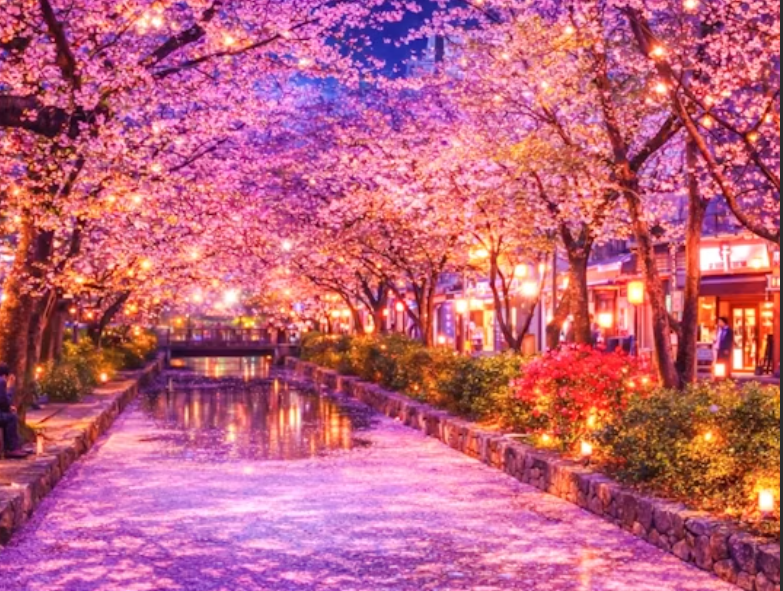
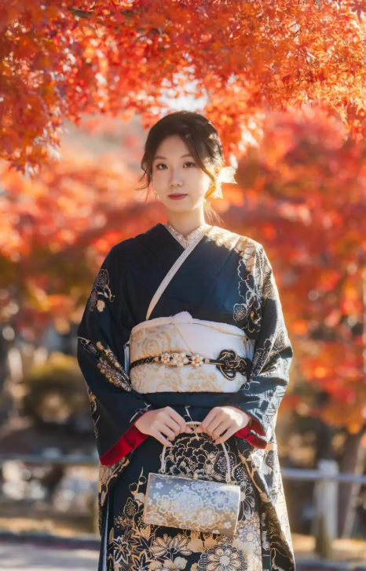
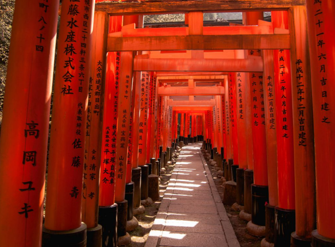
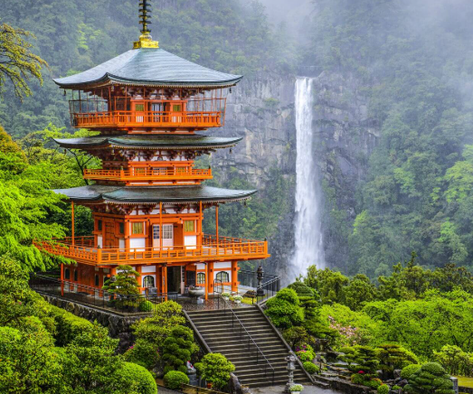
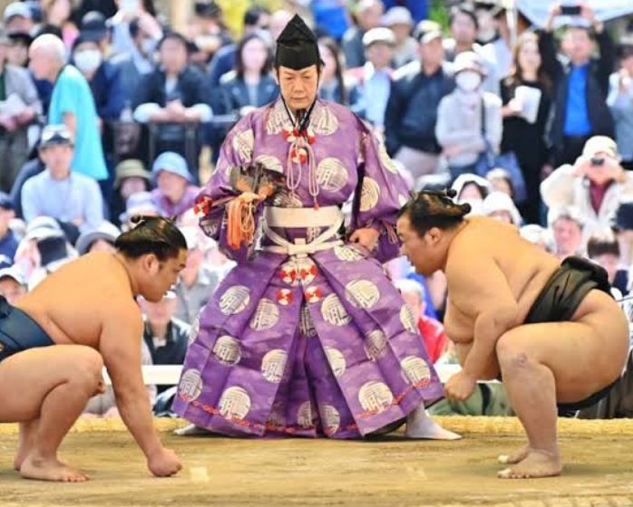
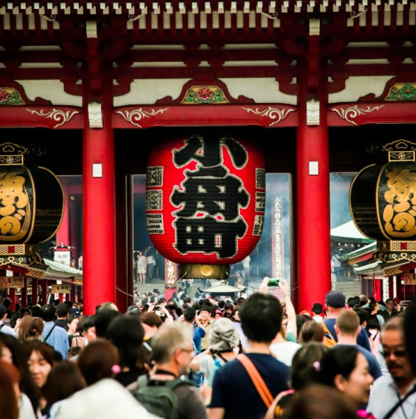
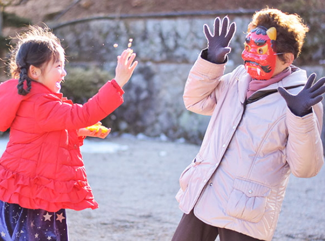
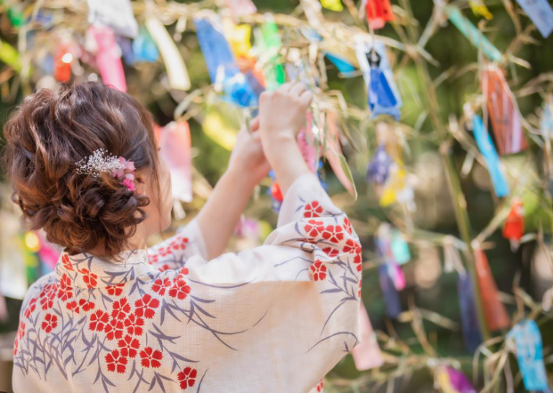
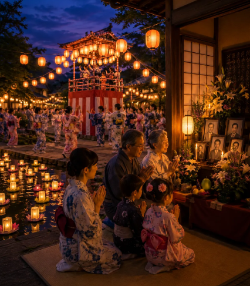
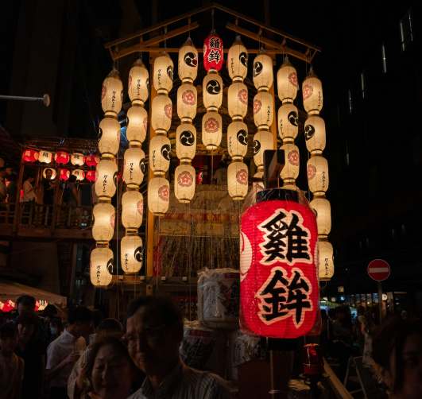

Japanese Cultural Icons
When you think of Japan, a few undeniable classics immediately come to mind—these are the legendary icons that just make Japan, Japan.

Hanami (Cherry Blossom View)
Hanami is the cherished tradition of gathering under blooming cherry blossom trees to picnic, celebrate, and appreciate the fleeting beauty of spring.
Anime
More than just cartoons, anime is a vibrant storytelling powerhouse that captures hearts worldwide with its boundless creativity, stunning visuals, and deep emotion.

Kimono
An exquisite T-shaped traditional garment woven with artistic precision, representing centuries of Japanese grace, seasonal elegance, and cultural pride.

Torii Gates
Distinctive red wooden arches that signal you are stepping onto sacred Shinto shrine grounds.

Shrines
Shinto shrines are peaceful, nature-surrounded spaces built to honor the native spirits of Japan, marked by iconic red torii gates at their entrances.

Sumo Wrestling
Japan’s 1,500-year-old national sport, where giant wrestlers face off in quick, intense bouts of strength and strategy.
Japanese Traditions
Japan’s year is packed with traditions that bring people together, from chasing away winter demons to celebrating star-crossed lovers and lots more. Here are ones of the most popular traditions in japan:

First Shrine Visit (Hatsumode)
Date: Jan 1–3
Millions kick off the New Year by visiting temples and shrines to pray for good luck, grab protective charms, and draw fortune slips.

Bean-Throwing Ritual (Setsubun)
Date: Feb 3
To mark the eve of spring, people throw roasted soybeans out their front doors to drive off bad luck and eat giant sushi rolls in total silence.

The Star Festival (Tanabata)
Date: July 7
Inspired by a romantic legend of two stars meeting across the Milky Way, people write their personal wishes on colorful paper strips and hang them on bamboo.

Ancestor Festival (Obon)
Date: Mid-August
A sacred summer tradition where families welcome ancestral spirits home with lively town dances and light floating paper lanterns on rivers.

Kyoto’s Grand Procession (Gion Matsuri)
Date: July
A massive 1,100-year-old festival featuring towering, hand-crafted wooden floats pulled through the streets to ward off bad health and misfortune.